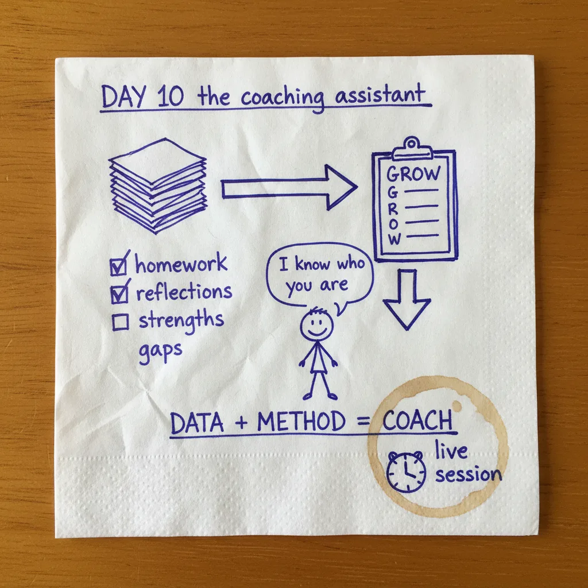

The Morning Standup
- Designer agent fixed. Focused on getting the prompts right and passed them to Jan for iteration. If the prompt is good, you can manually run the images. Faster feedback loop, better results.
- Project manager agent live. Trac got it fully operational. Notifications hitting Lark, email, and Cowork. The PM compiles a standup summary at 9am: what the humans are doing AND what the AI agents are planning.
- Yesterday's post shipped. Late, but out.
- Team process built. Created a project template in Claude team space around our 5-step method: determine the problem, decide the data, develop workflows, design instructions, deploy.
- CAIO Coach website rebuild kicked off. Migrating to Next.js, applying the UX designer's design system, connecting to a single company database. All brands feeding into one place.
All of that before the real work started.
The Real Build: An AI Coaching Assistant
This is the one I've been most excited about.
We run a leadership training program through AI Officer Institute. Part of that program includes structured homework assignments based on Georgetown University's executive curriculum. Each person reflects on their leadership style, their strengths, their gaps, the situations where they get stuck.
Here's the thing most people miss about AI coaching: the hard part isn't the coaching. It's the data.
If you ask AI to "coach someone on leadership," you'll get generic advice that sounds like a self-help book. But if you hand AI a person's actual reflections, their self-assessments, the patterns in how they describe their own challenges, now the AI has something to work with. It knows who it's talking to.
That homework IS the data layer. We didn't set out to build a coaching dataset. We set out to help people learn. But organized learning artifacts become the richest possible context for personalized coaching.
The second piece is the method. You need to tell the AI how to coach, not just what to know.
We're using GROW: Goal, Reality, Options, Will. It's a classic coaching framework. But you could just as easily use Radical Candor (Kim Scott) or any method you trust. The framework isn't the point. The point is that you pick one and encode it as a skill. You tell the AI: here's how a good coaching conversation works. Here are the kinds of questions to ask. Here's what to listen for. Here's when to push and when to reflect back.
Put those together and you don't have a chatbot. You have an AI coaching assistant that knows the person sitting across from it.
How to Build Your Own AI Coaching Assistant
This isn't theoretical. We're teaching this live at 4pm today. Here's the process:
Organize your data
Collect everything you know about the people you coach. Assessments, homework, meeting notes, reflections. Structure it so AI can read it. This is the step most people skip, and it's the one that matters most.
Pick your coaching framework
GROW, Radical Candor, something you learned from a mentor. Whatever method you'd actually use if you were sitting across from them. Don't invent something new. Use what you trust.
Write the skill
Tell the AI: here's the method, here's how to apply it, here's what a good coaching conversation looks like. Be specific about the kinds of questions to ask and when.
Connect data to skill
The AI reads the person's context, then coaches using your method. Not generic advice pulled from the internet. Personalized coaching grounded in real information about a real person.
Test it live
Run a session. See where it falls flat. Adjust. The first version won't be perfect, but you'll know immediately what's missing because you'll feel it in the conversation.
Schedule it
Put it on a recurring run. A coaching assistant you have to remember to open isn't a system. One that fires on schedule and is ready when you sit down with your team? That's leverage.
The whole point of AI in leadership isn't to replace the coach. It's to scale the coach. Your judgment, your method, your understanding of the people you work with, available every day instead of once a quarter. You could build one of these with your own data and a framework you already trust. The AI isn't the coach. You are. The AI just makes sure you show up consistently.
Day 10 of 14
Ten days in. Four to go.
Here's what's becoming clear: every day adds a capability that compounds on the ones before it. Day 8 was the content studio. Day 9 was the content pipeline. Day 10 is coaching. Each one makes the next one easier because the system gets smarter, the workflows get tighter, and the data gets richer.
The AI coaching assistant is the build I'm most proud of so far. Not because it's the most technically complex. Because it's the most human.
Four days left. Tomorrow I'm in transit to Hanoi, which means I'll be building from airports and taxis. The goal: get the web developer agent running on a schedule so it produces all our posts automatically by Monday. If that works, the content machine runs itself.
See you on Day 11.
Want the full story? Start at Day 1